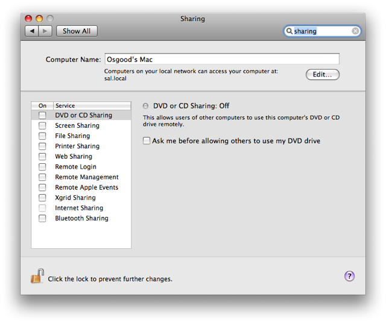
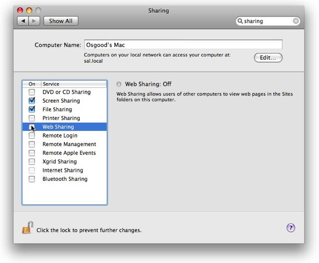

Tutorial 04: More Recording
THe Sharing preference pane will be displayed.

So far, we’ used keystrokes and commands to peform actions. These record the most accurately and reliably. You’ll want to rely on them as much as possible for your recordings. However, mouse movements and clicks can also be recorded too.
Use the cursor to select Screen Sharing, File Sharing, and Web Sharing in the sharing Service list.

The last step is to quit the System Preferences application by typing Command-Q.